1
Теория от А до Я
Схемы, материалы, протокол работы. Первая отработка на манекене и подбор пинцета.
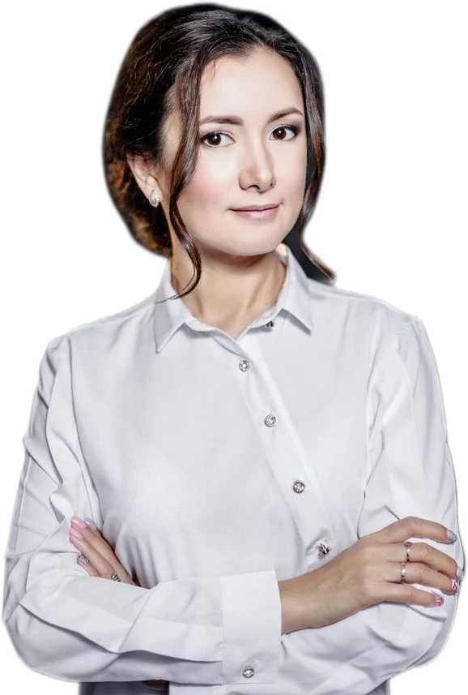
Учим ресницам, бровям и ногтям. Туймазы, группы по 2‑3 человека.
КурсыРуками,
а не по
видеоурокам
Преподаватель сидит рядом и видит каждое движение пинцета. Ошибку поправляем сразу, а не после курса.
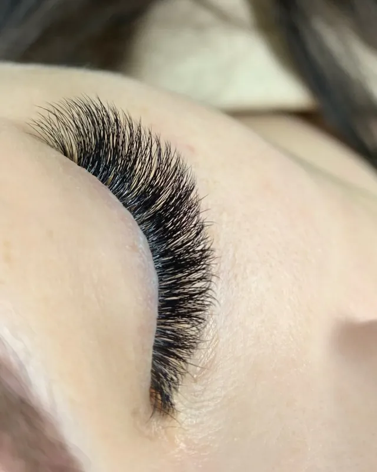

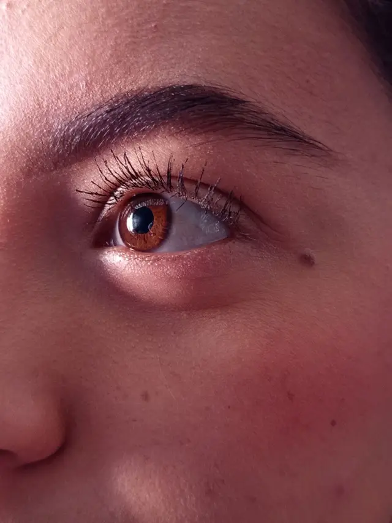
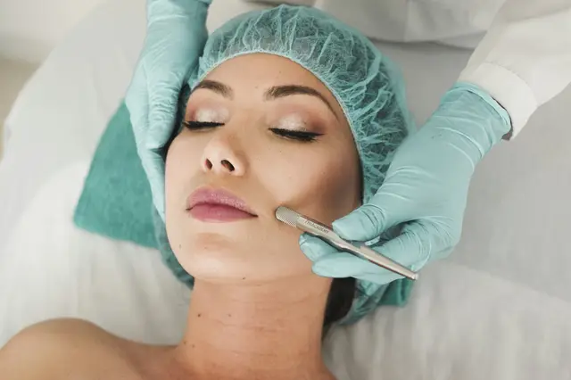
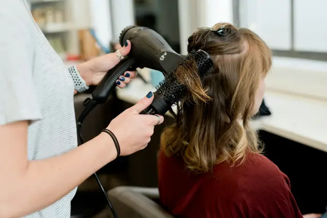
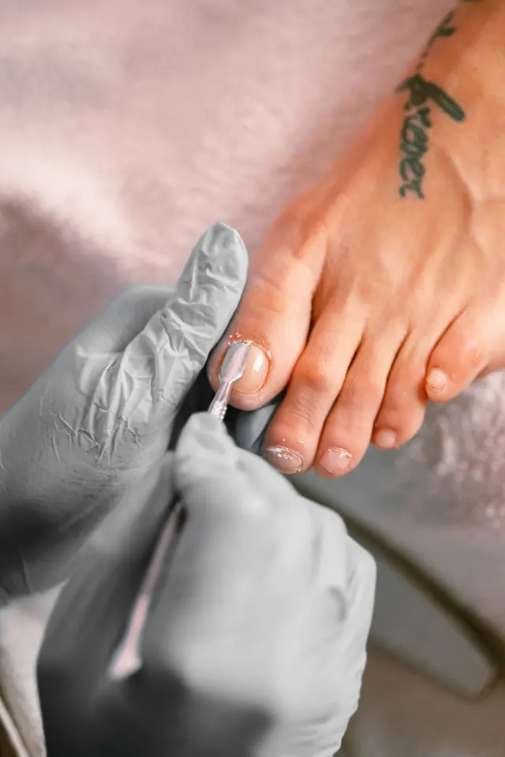
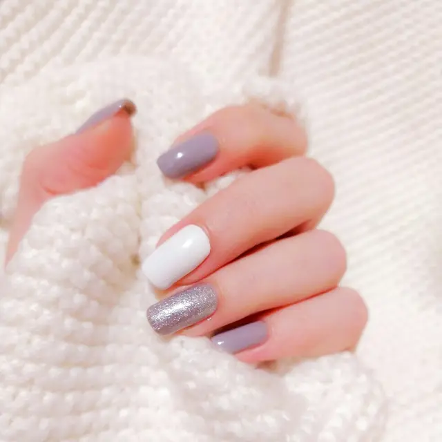
Так идёт комплексный курс по ресницам. Материал и модели на время обучения даёт студия.
Схемы, материалы, протокол работы. Первая отработка на манекене и подбор пинцета.
Здоровье мастера и клиента, СанПиН, снятие. Пучки 2-3D и классика на живой модели.
Наращивание 2-3D на модели. Как составить прайс и когда поднимать цены. Стартовый набор и сертификат.
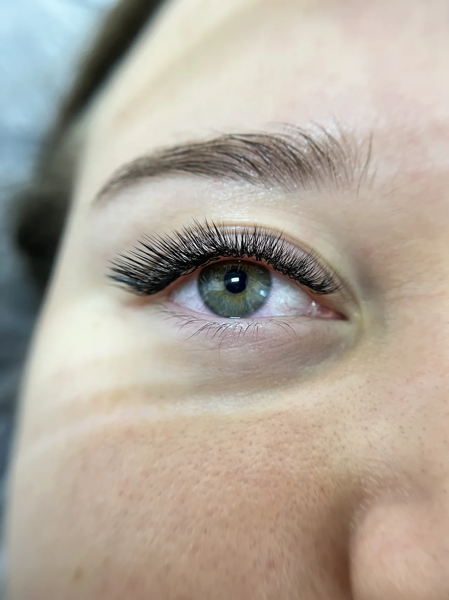
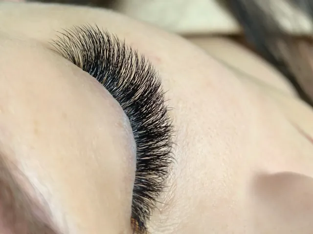
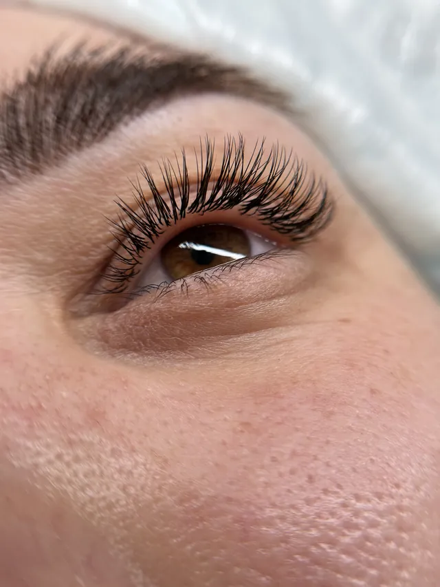
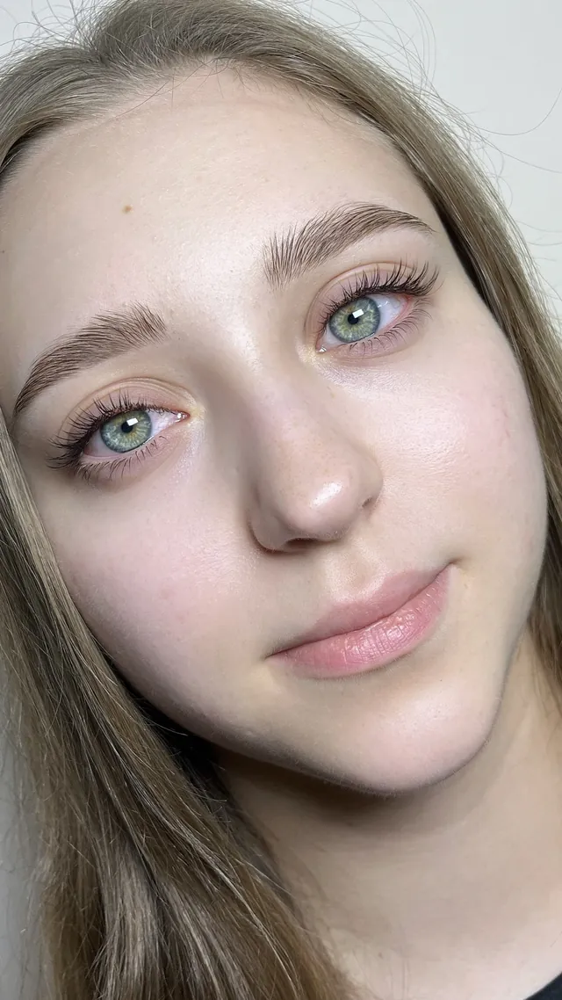
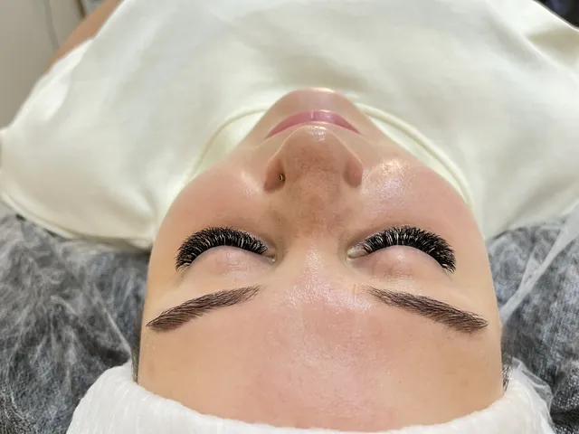
Ведёт ученицу и после курса: отвечает в общем чате, подсказывает с первыми клиентками.
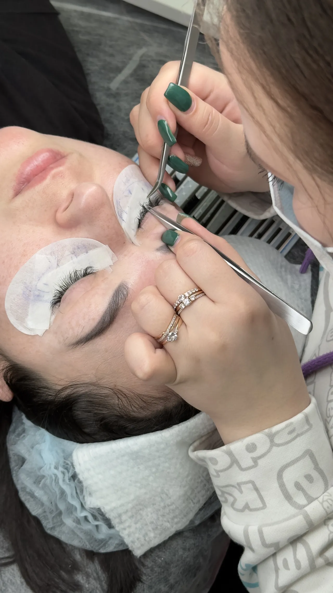
Да. Базовые курсы рассчитаны на тех, кто ни разу не держал пинцет. Начинаем с манекена, к модели переходим, когда рука готова.
Нет. На время обучения материал и модели даёт студия. После курса ученицы получают скидку 10% на материалы.
Ручку, тетрадь, вторую обувь и хорошее настроение.
Сертификат, общий чат с тренером и бесплатная отработка ещё одной модели в течение года: эффект выбираете сами.